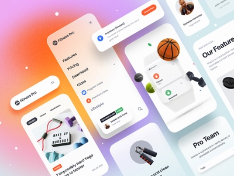

Hamilton Golf and Country Club
Yardage Book

Project Type
Personal Project
Timeline
4 Months
Role
Project Designer
Product
The goal for this product was to provide the members of Hamilton Golf and Country Club a yardage book to give precice yardages from any point on any hole and give a detailed topography map for each green to assist users in reading greens and seeing how greens will react to approach shots. The overaching goal with the design was to add as much information to assist the user while keeping a simple and minimalist design as possible.
Context
The reason why I went about making this is because Hamilton Golf and Country Club does not currently have a yardage book. Without a rangefinder, some golfers (including me) do not have a rangefinder, and thus is not able to get accuate yardages. This will allow users to get a yardage to the pin as well as povide a detailed view of the hole as well as the green topography.
Design Process
Research
The first step that I took to this project is conduct research in order to see what the average user of a yardage book wants. The next step from there was to research what are the features in a yardage book and see what the typical yardage book includes. From there, I was able to create a few rough sketches and share it with some industry professionals to get their opinion on how I could improve my design.
Idea and Design
After gathering feedback from industry professionals, I then came up with my final sketches. From there, my next step was to hop into illustrator and photoshop to create a good copy of the actual product.
Revises
Next, I shared my good copy with my industry professionals to get further feedback. From there, I was able to incorporate their feedback to get the design to the best that I can.
Present
The final step was to present this project to board members of Hamilton Golf and Country Club.
Design
As the design was to be a guide more than anything, I wanted to keep the interface as simple as possible. One way that I achieved this is using strictly black and white colours, with the exception of the cover and the course map. Furthermore, I used a very simple and very readable font, as the main demographic of the user is older and wants things that are easy to read.

High-Fidelity Design
Cover Page
The goal of the cover page is to describe the product, as well as the golf course that they were using it at. Thus, I kept as little as I could on the cover while leaving the neccities there.
Course Map
The goal for this page is to provide a guide to the user of the routing of the golf course. Hence, I included the hole numbers as well as where the practice area and such are.
Top Page
The goal of the design was to provide a overall hole view.
Bottom Page